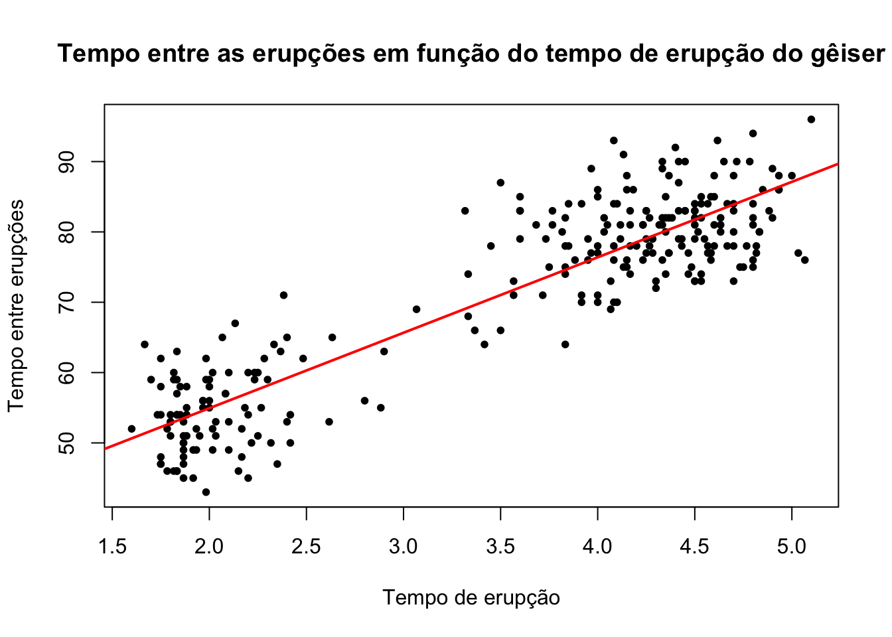

O pacote caret (abreviação de Classification And Regression Training) é um pacote muito útil para o machine learning pois envolve algoritmos que possibilitam que as previsões sejam feitas de forma mais prática, simplificando o processo de criação de modelos preditivos. Neste guia detalhado pode ser encontrado mais informações sobre o pacote.
Avaliando Classificadores
Vamos utilizar a base de dados spam novamente para realizarmos o procedimento de predição para um e-mail (se ele é spam ou não spam), dessa vez utilizando o pacote caret.
Para fazer a separação da amostra em treino e teste vamos primeiramente particionar a base de dados com a função createDataPartition().
library(caret)
Loading required package: ggplot2
Loading required package: lattice
library(kernlab)
Attaching package: 'kernlab'
The following object is masked from 'package:ggplot2':
alpha
data(spam)set.seed(371)noTreino =createDataPartition(y = spam$type, p =0.75, list = F)
Essa função retorna os números das linhas a serem selecionadas para o treino. Os principais argumentos são:
y = classe dos dados que deverá ser mantida a mesma proporção nos conjuntos treino e teste. Para o nosso exemplo, escolhemos manter a mesma proporção do tipo do e-mail. Sendo assim, tanto no treino como no teste teremos a mesma proporção de e-mails spam e não spam.
p = porcentagem da amostra que será utilizada para o treino. Para o nosso exemplo, escolhemos 75%.
list = argumento do tipo logical, se TRUE → os resultados serão mostrados em uma lista, se FALSE → os resultados serão mostrados em uma matriz.
OBS: Esse comando deve ser utilizado apenas quando os dados são amostras independentes.
Agora vamos separar o que irá para o treino e o que irá para o teste.
# Separando as linhas para o treino:treino = spam[noTreino,]# Separando as linhas para o teste:teste = spam[-noTreino,]
Dado que já foi feito a separação das amostras treino e teste, o próximo passo é realizarmos o treinamento. Para isso é preciso escolher um dos modelos para ser utilizado. Uma lista com todos os modelos implementados no pacote caret pode ser vista com o seguinte comando:
Para o nosso exemplo vamos utilizar o “glm” (generalized linear model).
Agora vamos criar o nosso modelo, utilizando apenas a amostra treino. Para isso vamos usar o comando train().
modelo =train(type ~ ., data = treino, method ="glm")
Warning: glm.fit: fitted probabilities numerically 0 or 1 occurred
Warning: glm.fit: fitted probabilities numerically 0 or 1 occurred
Warning: glm.fit: fitted probabilities numerically 0 or 1 occurred
Warning: glm.fit: fitted probabilities numerically 0 or 1 occurred
Warning: glm.fit: fitted probabilities numerically 0 or 1 occurred
Warning: glm.fit: fitted probabilities numerically 0 or 1 occurred
Warning: glm.fit: fitted probabilities numerically 0 or 1 occurred
Warning: glm.fit: fitted probabilities numerically 0 or 1 occurred
Warning: glm.fit: fitted probabilities numerically 0 or 1 occurred
Warning: glm.fit: fitted probabilities numerically 0 or 1 occurred
Warning: glm.fit: fitted probabilities numerically 0 or 1 occurred
Warning: glm.fit: fitted probabilities numerically 0 or 1 occurred
Warning: glm.fit: fitted probabilities numerically 0 or 1 occurred
Warning: glm.fit: fitted probabilities numerically 0 or 1 occurred
Warning: glm.fit: fitted probabilities numerically 0 or 1 occurred
Warning: glm.fit: fitted probabilities numerically 0 or 1 occurred
Warning: glm.fit: fitted probabilities numerically 0 or 1 occurred
Warning: glm.fit: fitted probabilities numerically 0 or 1 occurred
Warning: glm.fit: fitted probabilities numerically 0 or 1 occurred
Warning: glm.fit: fitted probabilities numerically 0 or 1 occurred
Warning: glm.fit: fitted probabilities numerically 0 or 1 occurred
Warning: glm.fit: fitted probabilities numerically 0 or 1 occurred
Warning: glm.fit: fitted probabilities numerically 0 or 1 occurred
Warning: glm.fit: fitted probabilities numerically 0 or 1 occurred
Warning: glm.fit: fitted probabilities numerically 0 or 1 occurred
Warning: glm.fit: fitted probabilities numerically 0 or 1 occurred
No primeiro argumento colocamos qual variável estamos tentando prever em função de qual(is). No nosso caso, queremos prever “type” em função (“~”) de todas as outras, por isso utilizamos o “.”. Em seguida dizemos de qual base de dados queremos construir o modelo e por último o método de treinamento utilizado.
Agora vamos dar uma olhada no nosso modelo.
modelo
Generalized Linear Model
3451 samples
57 predictor
2 classes: 'nonspam', 'spam'
No pre-processing
Resampling: Bootstrapped (25 reps)
Summary of sample sizes: 3451, 3451, 3451, 3451, 3451, 3451, ...
Resampling results:
Accuracy Kappa
0.9224544 0.8365594
Podemos observar que utilizamos uma amostra de tamanho 3451 no treino e 57 preditores para prever a qual classe um e-mail pertence, spam ou não spam. O que a função faz é realizar várias maneiras diferentes de testar se esse modelo funcionará bem e usar isso para selecionar o melhor modelo. Neste caso ela usou a reamostragem por bootstrapping com 25 replicações (o default da função).
Uma vez que ajustamos o modelo podemos aplicá-lo na amostra teste, para estimarmos a precisão do classificador. Para isso utilizamos o comando predict(). Dentro da função nós passamos o modelo que ajustamos no treino e em qual base de dados gostaríamos de realizar a predição.
Ao fazermos isso obtemos uma série de predições para as classes dos e-mails do conjunto teste. Podemos então realizar a avaliação do modelo comparando os resultados da predição com as reais classes dos e-mails, por meio do comando confusionMatrix().
Matriz de Confusão (Confusion Matrix)
A matriz de confusão é a matriz de comparação feita após a predição, onde as linhas correspondem ao que foi previsto e as colunas correspondem à verdade conhecida.
Exemplo: A matriz de confusão para o problema de predição dos e-mails em spam ou não spam fica da seguinta forma:
Onde na primeira coluna se encontram os elementos que possuem a característica de interesse (os e-mails que são spam), e, respectivamente nas linhas, os que foram corretamente identificados - o qual são chamados de Verdadeiros Positivos (VP) - e os que foram erroneamente identificados - os Falsos Negativos (FP). Na segunda coluna se encontram os elementos que não possuem a característica de interesse (os e-mails que são ham) e, respectivamente nas linhas, os que foram erroneamente identificados - o qual são chamados de Falsos Positivos (FN) - e os que foram corretamente identificados - os Verdadeiros Negativos (VN).
Com as devidas classificações a matriz de confusão fica da seguinte forma:
Dentro da função passamos as predições que obtemos pelo modelo ajustado e as reais classificações dos e-mails do conjunto teste.
confusionMatrix(predicao, teste$type)
Confusion Matrix and Statistics
Reference
Prediction nonspam spam
nonspam 659 55
spam 38 398
Accuracy : 0.9191
95% CI : (0.9018, 0.9342)
No Information Rate : 0.6061
P-Value [Acc > NIR] : < 2e-16
Kappa : 0.8295
Mcnemar's Test P-Value : 0.09709
Sensitivity : 0.9455
Specificity : 0.8786
Pos Pred Value : 0.9230
Neg Pred Value : 0.9128
Prevalence : 0.6061
Detection Rate : 0.5730
Detection Prevalence : 0.6209
Balanced Accuracy : 0.9120
'Positive' Class : nonspam
A função retorna a matriz de confusão e alguns dados estatísticos, como por exemplo a Precisão (Accuracy), o Intervalo de Confiança com 95% de confiança (95% CI), a Sensibilidade (Sensitivity), Especificidade (Specificity), entre outros.
Podemos notar que o GLM foi um bom modelo de treinamento para os nossos dados pois obtivemos altas taxas de acertos: uma precisão de 0,94, 0,96 de sensitividade e 0,90 de especificidade. Vamos ver melhor algumas dessas estatísticas:
Definição (Sensibilidade): A sensibilidade de um método de predição é a porcentagem dos elementos da amostra que possuem a característica de interesse e foram corretamente identificados. Para o nosso exemplo dos e-mails, a sensabilidade é a porcentagem dos e-mails que são spam e foram classificados pelo nosso algoritmo de predição como spam.
Ou seja, podemos escrever \(Sensibilidade = \frac{VP}{VP+FN}\)
Definição (Especificidade): A especificidade de um método de predição é a porcentagem dos elementos da amostra que não possuem a característica de interesse e foram corretamente identificados. Para o nosso exemplo dos e-mails, a especificidade é a porcentagem dos e-mails que são “ham” e o algoritmo de predição os classificou como tal.
Ou seja, podemos escrever \(Especificidade = \frac{VN}{VN+FP}\)
Quando obtemos as sensibilidades e as especificidades de diferentes preditores, naturalmente surge o questionamente: qual deles é melhor para estimar as verdadeiras características de interesse? A resposta depende do que é mais importante para o problema.
Se identificar corretamente os positivos for mais importante, utilizamos o preditor com maior sensibilidade. Se identificar corretamente os negativos for mais importante, utilizamos o preditor com maior especificidade.
Outra medida para avaliar a qualidade do nosso preditor é a precisão (Accuracy). Ela avalia a porcentagem de acertos que tivemos em geral. Ou seja, somamos o número de Verdadeiros Positivos com o número de Verdadeiros Negativos e dividimos pelo tamanho da amostra. \(Precisão = \frac{VP+VN}{VP+VN+FN+FP}\)
Para demais medidas da matriz de confusão consulte o [apêndice].
Avaliando Regressores
Agora vamos utilizar a base de dados faithful para tentar prever o tempo de espera (waiting) entre uma erupção e outra de um gêiser dado a duração das erupções (eruption).
Primeiro, vamos separar a amostra em treino e teste.
set.seed(39)noTreino =createDataPartition(y=faithful$waiting, p=0.7, groups =5, list=F)treino = faithful[noTreino,]; teste = faithful[-noTreino,]
Quando o argumento y é numérico, a amostra é dividida em grupos com base nos percentis e é feita uma amostragem estratificada. O número de percentis é definido pelo argumento groups.
Agora temos que treinar nosso modelo. Para esse exemplo vamos usar a Regressão Linear (LM - Linear Regression).
Os métodos disponíveis e seus usos podem ser encontrados no guia do caret.
Vamos treinar nosso modelo utilizando a amostra treino.
modelo = caret::train(waiting~eruptions, data = treino, method ="lm")
Novamente, colocamos a variável que tentamos prever em função das outras. No caso, só temos duas variáveis então não precisamos colocar o ponto como no [classificador].
modelo
Linear Regression
192 samples
1 predictor
No pre-processing
Resampling: Bootstrapped (25 reps)
Summary of sample sizes: 192, 192, 192, 192, 192, 192, ...
Resampling results:
RMSE Rsquared MAE
6.060639 0.805468 4.948071
Tuning parameter 'intercept' was held constant at a value of TRUE
Podemos ver que temos 192 observações no conjunto treino e 1 preditor.
Agora vamos aplicar nosso modelo na amostra teste para avaliar o erro dele.
predicao =predict(modelo, newdata = teste)
Assim como no classificador, a função predict nos retorna a previsão dos tempos entre as erupções dado os tempos das durações das erupções.
MSE
Assim como há diversas formas de compararmos a qualidade dos classificadores, há também diversas formas de compararmos regressores. O que estudaremos agora é o MSE (mean squared error - erro quadrático médio). Mais formas de comparação de regressores também serão vistas futuramente.
O MSE é a média de quanto os valores previstos para as observações se distanciaram dos valores verdadeiros dessa observação. Obtemos ele somando essas distâncias entre os valores previstos e os reais ao quadrado e dividindo por n.
# Gráfico do tempo entre as erupções em função do tempo de erupção do gêiseresplot(faithful$eruptions, faithful$waiting, pch =20, ylab="Tempo entre Erupções",xlab ="Tempo de Erupção", main ="Tempo entre as erupções em função do tempo de erupção do gêiser")
Podemos notar que há uma relação linear positiva entre as variáveis. Vamos então ajustar um modelo de regressão linear.
modelo =lm(faithful$waiting~faithful$eruptions)plot(y = faithful$waiting, x = faithful$eruptions, pch =20, ylab="Tempo entre erupções",xlab ="Tempo de erupção", main ="Tempo entre as erupções em função do tempo de erupção do gêiser")abline(modelo, col ="red", lwd =2)

Na reta de regressão temos todos os valores previstos para o tempo de erupção de acordo com os tempos de espera. Podemos então calcular o MSE para o nosso modelo utilizando o comando mse().
Então temos que, em média, o valor estimado para a variável de interesse no conjunto de teste se distancia do valor real observado em 32,41941 escores. Note que esta é uma medida que soma as distâncias ao quadrado, por isso o MSE é um número relativamente grande.